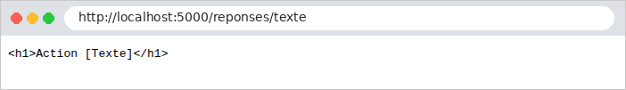
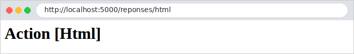

2. Contrôleurs, actions, routage
Ce chapitre étudie le chemin d'une requête, du navigateur jusqu'à l'action qui la traite, et la réponse que renvoie cette action. Les vues n'apparaîtront qu'au chapitre 4 : ici, les actions renvoient directement du texte ou du JSON.
2.1. Exemple 01 : la structure d'une application ASP.NET Core MVC
Le premier exemple est la plus petite application [ASP.NET Core MVC] possible. Outre les fichiers [Exemple01.csproj] et [appsettings.json] présentés en introduction, elle a deux fichiers :
2.1.1. Le point d'entrée : Program.cs
Commentons ce code :
- ligne 2 : [WebApplication.CreateBuilder] crée le « constructeur » de l'application. Il lit la configuration (le fichier [appsettings.json], les variables d'environnement...), met en place la journalisation, et prépare la liste des services de l'application, [builder.Services]. Le paramètre [args] contient les arguments de la ligne de commande ;
- ligne 5 : on ajoute aux services ceux dont [MVC] a besoin pour trouver les contrôleurs de l'application et exécuter leurs actions ;
- ligne 8 : on construit l'application. Après cette ligne, la liste des services ne peut plus être modifiée ;
- ligne 11 : les routes déclarées par les contrôleurs (les attributs [[HttpGet]], [[Route]]... que nous allons voir) sont activées : sans cette ligne, aucune action ne serait jamais appelée ;
- ligne 14 : démarre le serveur web [Kestrel], et attend les requêtes jusqu'à ce qu'on arrête l'application ([Ctrl-C]). Sans autre indication, le serveur écoute sur le port 5000.
Ce fichier n'a ni classe ni méthode [Main] : c'est un programme à instructions de niveau supérieur. Le compilateur [C#] enveloppe lui-même ces instructions dans une méthode [Main], point d'entrée du programme. On remarque aussi l'absence de directives [using] : [WebApplication] appartient à l'espace de noms [Microsoft.AspNetCore.Builder], importé automatiquement (cf. [ImplicitUsings] en introduction).
2.1.2. Le contrôleur : Controllers/AccueilController.cs
- ligne 1 : l'espace de noms qui contient la classe [Controller] et les attributs de [MVC] ;
- ligne 3 : l'espace de noms des classes de ce fichier. Par convention, il reprend le nom du projet ([Exemple01]) et le dossier du fichier ([Controllers]). La forme [namespace X;] (sans accolades) s'applique à tout le fichier ;
- ligne 6 : un contrôleur est une classe publique qui hérite de la classe [Controller]. Par convention, son nom se termine par [Controller]. [ASP.NET Core] trouve tout seul les contrôleurs de l'application : il n'y a pas à les déclarer ;
- ligne 9 : l'attribut [[HttpGet("/")]] associe la méthode [Index] aux requêtes [GET /]. Une méthode ainsi associée à une route est une action. Un attribut [C#] s'écrit entre crochets, juste avant ce qu'il décrit : il ajoute une information à la méthode, que le framework lit au démarrage ;
- ligne 13 : la valeur rendue par l'action est la réponse envoyée au navigateur.
2.1.3. Exécution
Dans un terminal ouvert sur le dossier [01-structure], on tape [dotnet run]. Après la compilation, le serveur démarre :
Les messages de démarrage indiquent l'adresse d'écoute ([http://localhost:5000]) et l'environnement d'exécution : [Production], l'environnement par défaut. Nous verrons que certains comportements d'[ASP.NET Core] dépendent de l'environnement ([Development] ou [Production]). Demandons l'URL [http://localhost:5000/] avec un navigateur :

puis avec [curl]. L'option [-i] affiche aussi les entêtes HTTP de la réponse (nous n'en gardons ici que quelques-uns) :
Une chaîne de caractères rendue par une action est envoyée avec l'entête [Content-Type: text/plain] : le navigateur l'affiche comme du texte brut, sans l'interpréter. C'est une différence avec [NestJS], qui l'envoyait comme du HTML ([text/html]). L'exemple 03 montrera comment envoyer du HTML.
2.2. Exemple 02 : le routage
Le routage associe une URL et une méthode HTTP (GET, POST...) à une action. L'exemple 02 a deux contrôleurs :
Le fichier [Program.cs] est identique à celui de l'exemple 01 : c'est le cas de tous les exemples de ce chapitre, sauf le dernier. Le fichier [Controllers/AccueilController.cs] :
- ligne 9 : l'action ne rend plus une chaîne, mais un [ContentResult] : une réponse dont on précise le contenu et le type ;
- lignes 11-22 : une chaîne brute [C#] ([raw string literal]), délimitée par trois guillemets. Elle peut s'étendre sur plusieurs lignes et contenir des guillemets sans les échapper. Les espaces qui précèdent le ["""] fermant sont retirés de chaque ligne ;
- ligne 24 : la méthode [Content(texte, type)] de la classe [Controller] fabrique un [ContentResult]. Le type [text/html] demande au navigateur d'interpréter le texte comme du HTML.
L'action [Index] renvoie ainsi une page HTML qui contient des liens vers les actions de l'autre contrôleur :

Le fichier [Controllers/PremierController.cs] :
Commentons ce code :
- ligne 6 : l'attribut [[Route("premier")]], posé sur la classe, fixe le préfixe commun à toutes les routes du contrôleur : ses actions traitent des URL qui commencent par [/premier] ;
- lignes 10-11 : [[HttpGet("")]] : l'action [Index] traite [GET /premier]. L'URL d'une action est la concaténation du préfixe du contrôleur et du chemin de l'action ;
- lignes 17-18 : l'action [Action01] traite [GET /premier/action01] ;
- lignes 24-25 : le même chemin, mais pour la méthode POST : [[HttpPost]] remplace [[HttpGet]]. Il existe aussi [[HttpPut]], [[HttpDelete]], [[HttpPatch]]... Le nom de la méthode [C#] ([Action01Post]) est libre : seuls les attributs comptent pour le routage. Dans une même classe, deux méthodes ne peuvent d'ailleurs pas porter le même nom avec les mêmes paramètres ;
- lignes 31-32 : [{id}] est un paramètre de route : ce segment de l'URL peut prendre plusieurs valeurs. [:int] est une contrainte : le segment doit être un nombre entier, sinon la route ne correspond pas. La valeur du segment est passée au paramètre de même nom de l'action, [id], déjà convertie en [int] : pour [/premier/produits/17], [id] vaut le nombre 17. C'est la liaison de modèle ([model binding]), que le chapitre suivant étudiera en détail ;
- lignes 38-39 : deux paramètres de route, passés à deux paramètres de l'action ;
- lignes 44-46 : [{**chemin}] est un paramètre « attrape-tout » ([catch-all]) : il accepte n'importe quelle fin d'URL, y compris des [/].
Voici les réponses à quelques requêtes :
Pour envoyer une requête POST, on utilise l'option [-X POST] de [curl] :
Une méthode HTTP qu'aucune action ne traite pour ce chemin produit une erreur 405 ([Method Not Allowed]). L'entête [Allow] indique les méthodes acceptées :
Enfin, une URL qu'aucune route ne traite produit une erreur 404. C'est aussi le cas d'un identifiant qui ne respecte pas la contrainte [:int] : aucune route ne correspond à [/premier/produits/abc].
La réponse 404 d'[ASP.NET Core] n'a aucun contenu ([Content-Length: 0]) : le navigateur affiche sa propre page d'erreur.

Le chapitre 7 montrera comment remplacer cette réponse vide par une page HTML.
2.3. Exemple 03 : les réponses d'une action
Ce que renvoie une action détermine la réponse HTTP. L'exemple 03 passe en revue les principaux cas. Le fichier [Controllers/ReponsesController.cs] :
Commentons ce code :
- lignes 9-12 : une chaîne est envoyée telle quelle, avec l'entête [Content-Type: text/plain; charset=utf-8] ;
- lignes 16-19 : la même chaîne, annoncée comme du HTML (cf. exemple 02) : le navigateur l'interprète ;
- lignes 23-26 : un objet est sérialisé en JSON, avec l'entête [Content-Type: application/json]. [new { nom = ..., prenom = ... }] crée un objet d'un type anonyme : un type sans nom, fabriqué par le compilateur, commode pour une donnée qui ne sert qu'une fois. Les noms des propriétés du JSON sont écrits en « camelCase » (première lettre en minuscule), selon la convention de [JavaScript] ;
- lignes 30-33 : un tableau est lui aussi sérialisé en JSON. [["Mme", "Melle", "Mr"]] est une expression de collection ([C#] 12), qui crée ici un tableau de chaînes ;
- lignes 39-41 : quand l'action doit choisir le code de statut, elle rend un [IActionResult] : un objet qui décrit la réponse complète. Les méthodes de la classe [Controller] en fabriquent de nombreux : [StatusCode(201, objet)] produit une réponse de code 201 ([Created]) dont le contenu est l'objet sérialisé en JSON ;
- lignes 46-48 : [NoContent()] produit une réponse de code 204 ([No Content]) : « pas de contenu » ;
- lignes 53-57 : une action peut être asynchrone ([async]) : elle rend alors une tâche ([Task<T>]), l'équivalent d'une promesse [JavaScript], et [ASP.NET Core] attend la fin de la tâche avant de répondre. [await Task.Delay(500)] attend 500 ms sans bloquer le serveur : pendant l'attente, le thread qui exécutait l'action est rendu au serveur, qui peut s'en servir pour traiter d'autres requêtes. C'est ainsi que sont écrites toutes les actions qui interrogent une base de données ;
- lignes 62-64 : une erreur prévue par le programme : [NotFound(objet)] produit une réponse 404, avec un contenu JSON. Il existe de même [BadRequest(...)] (400), [Unauthorized()] (401), [Forbid()] (403), [Ok(...)] (200)... ;
- lignes 69-71 : une erreur imprévue : l'action lève une exception, qu'elle ne traite pas. [ASP.NET Core] répond alors par une erreur 500 ([Internal Server Error]).
Les réponses obtenues :
Pour l'exception, la réponse ne dit rien de l'erreur : ses détails pourraient aider un attaquant. Ils sont écrits dans la console du serveur (nous n'en reproduisons que le début) :
Dans un navigateur, la différence entre [text/plain] et [text/html] est visible :


2.4. Exemple 04 : les redirections
Une action peut répondre par une redirection : un code 301 ou 302 et un entête [Location] qui indique au navigateur quelle URL demander ensuite. Le navigateur la demande aussitôt, sans intervention de l'utilisateur. Les redirections sont omniprésentes dans une application web : après un formulaire réussi, après une connexion, après un changement de langue...
Le fichier [Controllers/RedirectionsController.cs] :
Commentons ce code :
- lignes 9-11 : [RedirectPermanent(url)] produit une redirection permanente (code 301, [Moved Permanently]) : la page a définitivement changé d'adresse. Les navigateurs et les moteurs de recherche peuvent mémoriser la nouvelle adresse ;
- lignes 22-24 : [Redirect(url)] produit une redirection temporaire (code 302, [Found]), ici vers une adresse calculée. [$"/page/{destination}"] est une chaîne interpolée : l'expression entre accolades est remplacée par sa valeur ;
- lignes 29-31 : [RedirectToAction(action, valeurs)] redirige vers une action, et non vers une URL : [ASP.NET Core] fabrique lui-même l'URL de l'action [Page] à partir de sa route ([page/{nom}]) et des valeurs fournies ([nom = destination]). Si la route de l'action change un jour, la redirection suit. [nameof(Page)] rend le nom de la méthode (["Page"]) : une faute de frappe serait une erreur de compilation, ce qui n'est pas le cas d'une chaîne écrite à la main ;
- lignes 42-44 : on peut rediriger vers un autre site.
[curl] montre la redirection sans la suivre :
Avec l'option [-L], [curl] suit la redirection, comme le ferait un navigateur. On voit alors les deux réponses successives :
Les deux actions produisent la même redirection, l'une avec une URL écrite à la main, l'autre avec une URL fabriquée par [ASP.NET Core]. Dans le navigateur, on ne voit que la page finale ; la barre d'adresse affiche la nouvelle URL :

2.5. Exemple 05 : les objets Request et Response
Chaque requête est représentée par un objet [HttpContext], qui contient la requête ([Request]) et la réponse en cours de fabrication ([Response]). Une action y accède directement, par les propriétés [HttpContext], [Request] et [Response] de la classe [Controller]. C'est parfois nécessaire, et nous le ferons dans l'étude de cas (pour lire ou déposer un cookie, par exemple), mais il faut savoir ce que l'on fait.
Le fichier [Controllers/HttpController.cs] :
Commentons ce code :
- lignes 10-18 : la requête : la méthode HTTP ([Request.Method]), le chemin ([Request.Path]), les paramètres de l'URL ([Request.QueryString]), les entêtes ([Request.Headers]), et, par [HttpContext.Connection], l'adresse IP du client. [?.] est l'opérateur « conditionnel null » : si [RemoteIpAddress] vaut [null], l'expression vaut [null] au lieu de provoquer une erreur ;
- lignes 24-27 : l'action ajoute un entête à la réponse, puis rend normalement sa valeur, qu'[ASP.NET Core] envoie. C'est l'usage le plus courant de [Response] ;
- lignes 32-36 : l'action écrit elle-même la réponse : code de statut, type, puis le corps, par [Response.WriteAsync]. Elle ne rend rien ([Task], et non [Task<T>]) ;
- lignes 41-45 : l'erreur à ne pas commettre : écrire une partie de la réponse, puis rendre un résultat. Dès que les premiers octets du corps sont partis vers le navigateur, le code de statut et les entêtes, envoyés avant le corps, ne peuvent plus changer.
Les réponses obtenues :
(l'option [-A] de [curl] fixe l'entête [User-Agent], qui identifie le navigateur)
Pour la dernière action, le navigateur reçoit un code 200 et le début de la réponse, et non la 404 demandée. La console du serveur signale l'erreur :
Dans la suite du document, les actions rendront presque toujours un résultat ([IActionResult]), et laisseront [ASP.NET Core] écrire la réponse. [Request] et [Response] ne serviront qu'à lire la requête et à déposer des cookies.
2.6. Exemple 06 : services et injection de dépendances
Les contrôleurs ne doivent pas contenir la logique de l'application : ils la délèguent à des services. Un service est un objet ordinaire, qu'[ASP.NET Core] crée et fournit aux classes qui en ont besoin : c'est l'injection de dépendances. L'exemple 06 découpe une petite application en deux parties, les produits et les clients :
2.6.1. Le produit
Un record : une classe de données, déclarée en une ligne. Le compilateur crée les propriétés [Id], [Nom] et [Prix], un constructeur qui les initialise, et des méthodes utilitaires (comparaison, affichage). Le type [decimal] représente les montants sans erreur d'arrondi.
2.6.2. Le contrat du service : IProduitsService
- ligne 4 : une interface décrit ce que sait faire le service, sans dire comment. Les classes qui utilisent le service ne connaîtront que cette interface ;
- ligne 6 : [IReadOnlyList<Produit>] : une liste que l'appelant peut lire, mais pas modifier ;
- ligne 7 : [Produit?] : un produit, ou [null] si aucun produit n'a cet identifiant (cf. [Nullable] en introduction).
2.6.3. L'implémentation : ProduitsService
- ligne 4 : la classe implémente l'interface : elle doit fournir toutes ses méthodes ;
- lignes 6-11 : les données, ici en mémoire, dans une liste initialisée par une expression de collection ;
- lignes 13-15 : les deux méthodes, écrites avec la syntaxe [=>] (méthode dont le corps est une seule expression). [FirstOrDefault] ([LINQ]) rend le premier produit qui vérifie la condition, ou [null] s'il n'y en a pas.
2.6.4. Le contrôleur ProduitsController
- lignes 11-13 : l'injection de dépendances. Le contrôleur déclare, dans son constructeur, qu'il a besoin d'un [IProduitsService] ; [ASP.NET Core] lui fournit l'objet enregistré pour ce type (cf. plus bas). Le contrôleur ne fait jamais [new ProduitsService()] : il ne connaît même pas cette classe, seulement l'interface. On pourrait remplacer l'implémentation (par une version qui lit une base de données, ou par une version de test) sans modifier le contrôleur ;
- lignes 17-19 : l'action délègue au service. La liste est sérialisée en JSON ;
- lignes 23-30 : [{id:int}] convertit l'identifiant ; un produit inexistant donne une réponse 404. [Ok(objet)] produit une réponse 200 dont le contenu est l'objet sérialisé en JSON. [is null] teste si une valeur est nulle.
2.6.5. Le contrôleur ClientsController
- ligne 9 : un constructeur principal ([C#] 12) : le paramètre du constructeur est écrit directement après le nom de la classe. Il est utilisable dans toute la classe : plus besoin de le recopier dans un champ. C'est la forme la plus compacte de l'injection de dépendances ; elle sera utilisée dans la suite du document. [ClientsController] reçoit le même service que [ProduitsController] ;
- lignes 12-15 : il l'utilise pour calculer le total d'un panier. [Sum] ([LINQ]) additionne les prix.
2.6.6. L'enregistrement des services
[ASP.NET Core] ne peut fournir un service que s'il le connaît : chaque service est enregistré dans [builder.Services], avec sa durée de vie. Le fichier [Produits/ProduitsExtensions.cs] :
- ligne 6 : une classe statique, qui ne contient que des méthodes statiques ;
- ligne 8 : une méthode d'extension. Le mot-clé [this] devant le premier paramètre permet de l'appeler comme si elle faisait partie du type de ce paramètre : [builder.Services.AddProduits()]. C'est ainsi que les bibliothèques d'[ASP.NET Core] ajoutent leurs services ([AddControllers], [AddAuthentication]...), et c'est une bonne façon de regrouper les enregistrements d'une partie de l'application ;
- ligne 12 : « quand une classe demande un [IProduitsService], lui fournir un [ProduitsService] ». [Singleton] est la durée de vie du service : une seule instance, créée à la première demande et partagée par toutes les requêtes. Il existe deux autres durées de vie : [Scoped] (une instance par requête HTTP) et [Transient] (une nouvelle instance à chaque demande). Le chapitre 6 y reviendra ;
- ligne 13 : la méthode rend la liste des services, pour qu'on puisse enchaîner les appels.
Le fichier [Program.cs] :
- ligne 1 : l'espace de noms de la méthode d'extension ;
- ligne 8 : l'enregistrement des services des produits.
Les contrôleurs, eux, ne sont pas enregistrés un à un : [AddControllers] les trouve tous, et [ASP.NET Core] crée un nouvel objet contrôleur pour chaque requête, en lui injectant les services qu'il demande.
2.6.7. Exécution
L'étude de cas est construite exactement ainsi : des contrôleurs minces, qui délèguent à des services injectés, décrits par des interfaces et enregistrés dans [Program.cs].